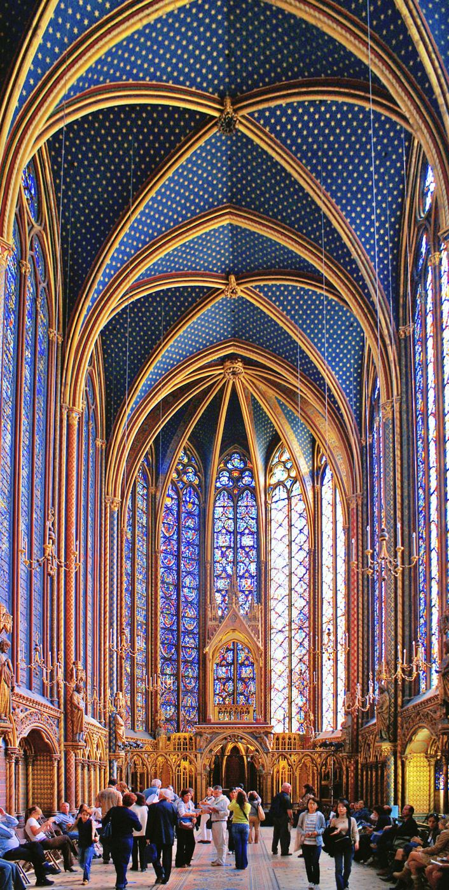
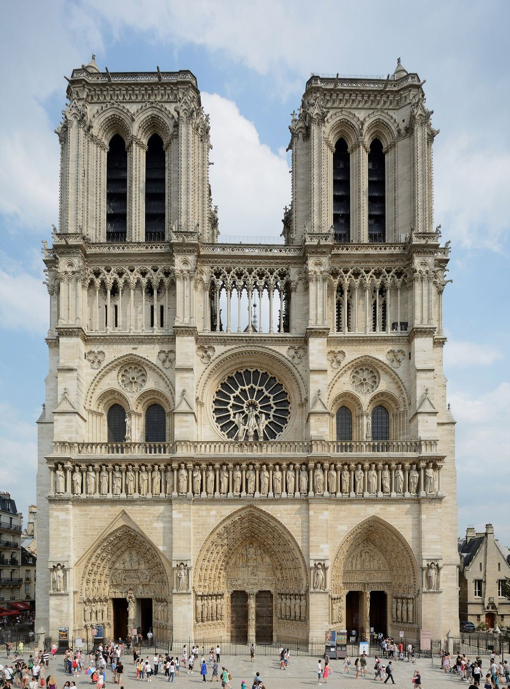
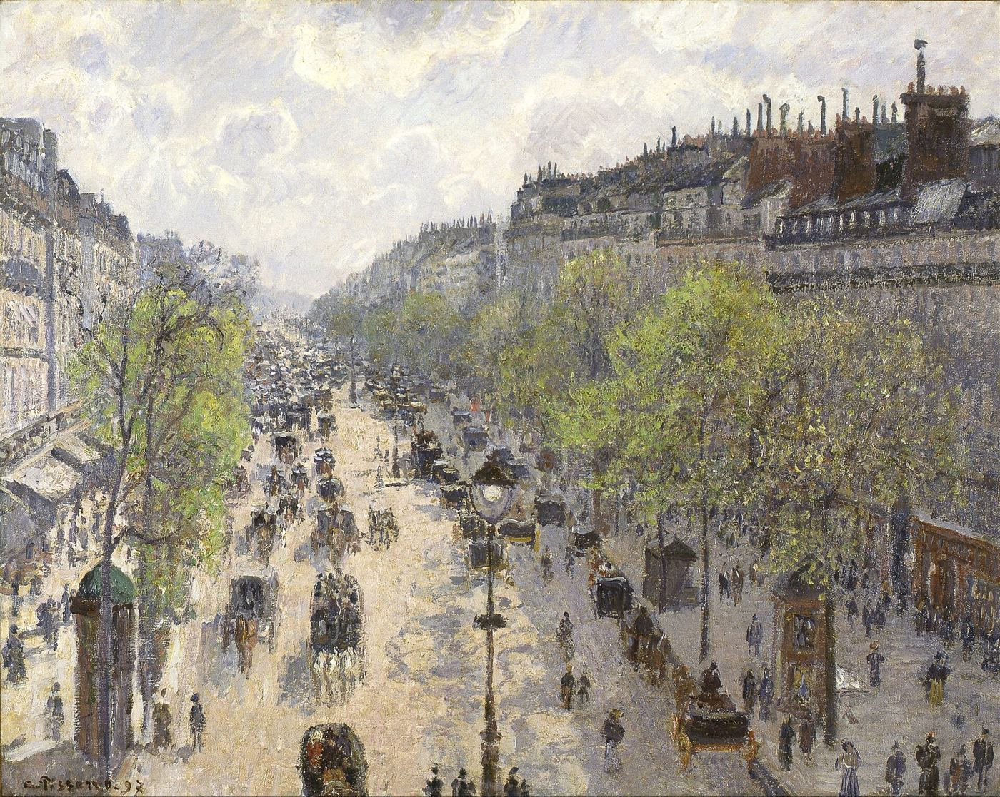
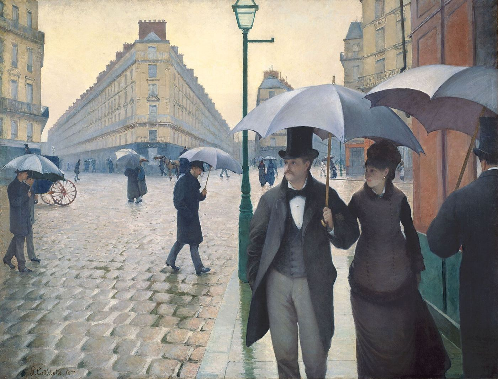
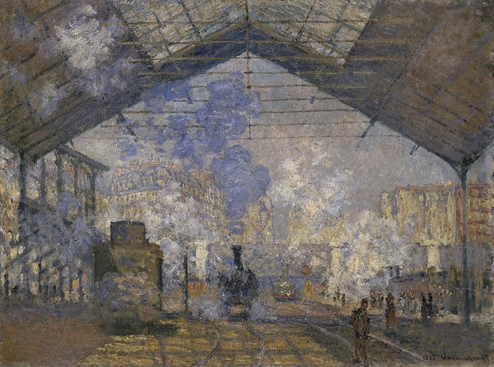
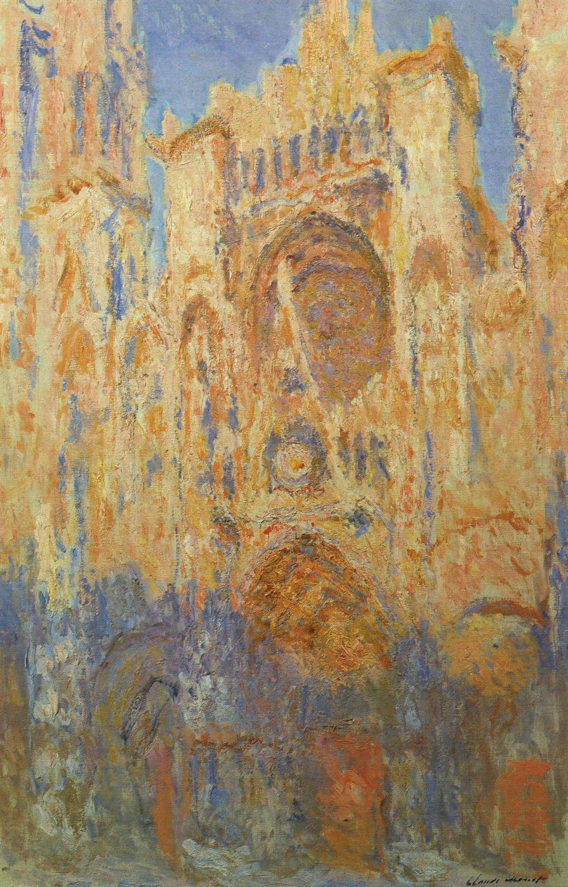
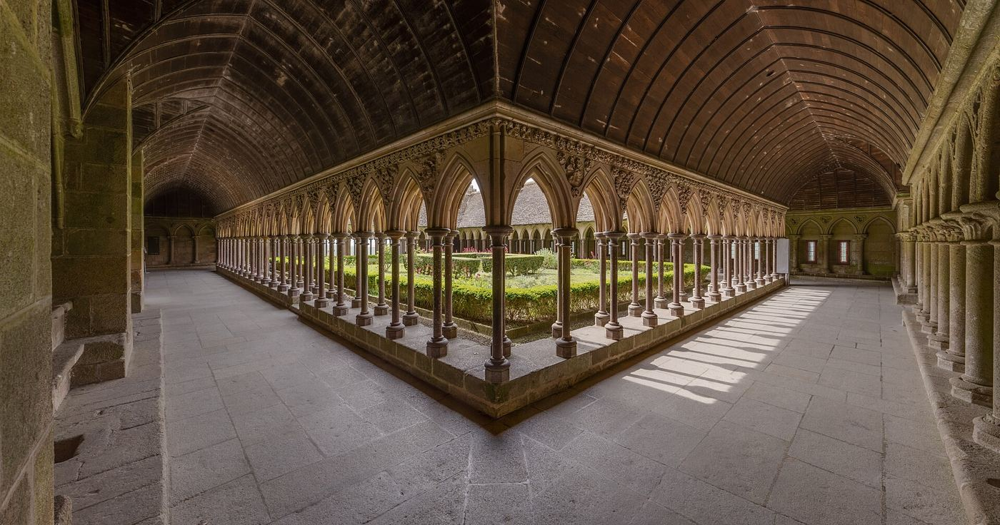

POUR MARIO
Vocabulaire, expressions et grammaire9 novembre 2026
La Sainte-Chapelle, Paris, 1242-1248 · Chef-d'œuvre du gothique rayonnant
Bonjour Mario !
Aujourd'hui, nous nous promenons entre les cathédrales gothiques et les toiles impressionnistes. Au programme : six mots et expressions, il y a à tous les temps, avoir changé, puis les pronoms compléments et surtout les pronoms toniques. Ensuite, sept exercices.
Oggi passeggiamo tra le cattedrali gotiche e le tele impressioniste. In programma: sei parole ed espressioni, «il y a» in tutti i tempi, «avoir changé», poi i pronomi complemento e soprattutto i pronomi tonici. Poi, sette esercizi.
▶ Chaque phrase a son audio : écoute et répète.
Ogni frase ha il suo audio: ascolta e ripeti.
IT : la traduction italienne. Essaie d'abord sans !
La traduzione italiana. Prova prima senza!
💾 Tes réponses sont enregistrées : tu peux fermer la page et revenir plus tard, sur le même appareil.
Le tue risposte vengono salvate: puoi chiudere la pagina e tornare più tardi, sullo stesso dispositivo.
★ Tes erreurs vont dans « À revoir », avec un lien vers la règle.
I tuoi errori vanno in «À revoir», con un link alla regola.

Notre-Dame de Paris, façade occidentale, XIIe-XIIIe siècles · Art gothique
1
Vocabulaire et expressions
Lessico ed espressioni
Lis le mot, essaie d'en deviner le sens, puis retourne la carte : tu trouveras la traduction, deux exemples et une remarque.
Leggi la parola, prova a indovinarne il significato, poi gira la carta: troverai la traduzione, due esempi e un'osservazione.

expression
ça va s'améliorer
Clique pour retourner la carte
Claude Monet, La Promenade, la femme à l'ombrelle, 1875
ça va s'améliorer
andrà meglio, migliorerà
Le temps est gris, mais ça va s'améliorer cet après-midi.
Il tempo è grigio, ma migliorerà nel pomeriggio.
Les marchés sont nerveux, mais à mon avis ça va s'améliorer.
I mercati sono nervosi, ma secondo me la situazione migliorerà.
s'améliorer = devenir meilleur. Futur proche : ça va + infinitif. Le nom : une amélioration.
«s'améliorer» = diventare migliore. Futuro prossimo: «ça va» + infinito. Il sostantivo: «une amélioration».

verbe · passé composé
avoir changé
Clique pour retourner la carte
Camille Pissarro, Le Boulevard Montmartre, printemps, 1897
avoir changé
essere cambiato
Paris a beaucoup changé depuis mes études.
Parigi è cambiata molto dai tempi dei miei studi.
Les prix ont changé : tout coûte plus cher.
I prezzi sono cambiati: tutto costa di più.
Attention : en français, changer se conjugue avec avoir. On dit il a changé, jamais il est changé.
Attenzione: in francese «changer» si coniuga con «avoir», mentre in italiano si dice «è cambiato».

verbe
empêcher (quelqu'un de faire quelque chose)
Clique pour retourner la carte
Gustave Caillebotte, Rue de Paris, temps de pluie, 1877
empêcher (quelqu'un de faire quelque chose)
impedire (a qualcuno di fare qualcosa)
La pluie nous a empêchés de visiter le cloître.
La pioggia ci ha impedito di visitare il chiostro.
Rien ne m'empêche de partir à Paris en mai.
Niente mi impedisce di partire per Parigi a maggio.
Construction : empêcher qqn de + infinitif. Attention : en français, la personne est un COD (la pluie nous a empêchés).
Costruzione: «empêcher qqn de» + infinito. In francese la persona è complemento oggetto diretto.
nom féminin
une consultation
Clique pour retourner la carte
une consultation
una consulenza · una visita (medica) · una consultazione
Le médecin donne ses consultations le matin.
Il medico riceve la mattina.
Une consultation chez un conseiller financier dure une heure.
Una consulenza da un consulente finanziario dura un'ora.
Le verbe : consulter un médecin, un avocat, un document, un site.
Il verbo: «consulter» un medico, un avvocato, un documento, un sito.

nom féminin
la hausse des prix
Clique pour retourner la carte
Claude Monet, La Gare Saint-Lazare, 1877
la hausse des prix
l'aumento dei prezzi
La hausse des prix touche surtout l'énergie et l'alimentation.
L'aumento dei prezzi colpisce soprattutto l'energia e i generi alimentari.
Les loyers sont en hausse à Florence.
Gli affitti sono in aumento a Firenze.
Le contraire : la baisse. Les expressions : être en hausse / en baisse.
Il contrario: «la baisse». Espressioni: «être en hausse / en baisse».
nom féminin pluriel
les menaces
Clique pour retourner la carte
Une gargouille gothique, la nuit
les menaces
le minacce
Les gargouilles devaient éloigner les menaces.
I doccioni dovevano allontanare le minacce.
Le changement climatique est une menace pour le patrimoine.
Il cambiamento climatico è una minaccia per il patrimonio.
Le verbe : menacer (minacciare). L'adjectif : menaçant.
Il verbo: «menacer». L'aggettivo: «menaçant».
Cathédrale Notre-Dame de Chartres, XIIe-XIIIe siècles · Patrimoine mondial de l'UNESCO
2
« Il y a » à tous les temps
«Il y a» in tutti i tempi
Il y a, il y avait, il y a eu, il y aura
C'è, c'era, c'è stato, ci sarà
Il y a = c'è / ci sono. On l'utilise pour dire qu'une chose ou une personne existe ou se trouve quelque part.
«Il y a» = c'è / ci sono. Si usa per dire che una cosa o una persona esiste o si trova da qualche parte.
⚠️ Toujours au singulier
Le verbe reste toujours au singulier, même avec un pluriel : il y a des touristes, il y avait trois portails. Jamais il y ont, jamais ils y a.
Il verbo resta sempre al singolare, anche con un plurale. A differenza dell'italiano («ci sono»), non si accorda mai.
Il y a trois portails sur la façade de Chartres.
Ci sono tre portali sulla facciata di Chartres.
| présent | il y a | c'è · ci sono | |
| imparfait (description) | il y avait | c'era · c'erano | |
| passé composé (événement) | il y a eu | c'è stato · ci sono stati | |
| futur simple | il y aura | ci sarà · ci saranno | |
| futur proche | il va y avoir | sta per esserci · ci sarà | |
| conditionnel | il y aurait | ci sarebbe · ci sarebbero |
Il y a beaucoup de touristes devant Notre-Dame.
Ci sono molti turisti davanti a Notre-Dame.
Autrefois, il y avait des marchands sur le parvis.
Un tempo c'erano dei mercanti sul sagrato.
En 2019, il y a eu un grave incendie.
Nel 2019 c'è stato un grave incendio.
L'année prochaine, il y aura une grande exposition Monet.
L'anno prossimo ci sarà una grande mostra di Monet.
Attention, il va y avoir du monde ce week-end.
Attenzione, ci sarà molta gente questo fine settimana.
Sans la pluie, il y aurait plus de visiteurs.
Senza la pioggia, ci sarebbero più visitatori.
La négation
il n'y a pas de + nom (de, pas des)
«il n'y a pas de» + nome
Il n'y a pas de musée baroque dans ce quartier.
Non c'è nessun museo barocco in questo quartiere.
Il n'y avait pas de file d'attente. Il n'y aura pas de grève.
Non c'era fila. Non ci sarà sciopero.
La question
Est-ce qu'il y a… ? · Y a-t-il… ? (soutenu)
Due forme di domanda.
Est-ce qu'il y a une visite guidée ? Y a-t-il des billets pour demain ?
C'è una visita guidata? Ci sono biglietti per domani?
💡 Il y a + durée = « fa »
Avec une durée, il y a veut dire fa : je suis allé à Chartres il y a deux ans.
Con una durata, «il y a» significa «fa».
J'ai visité la Sainte-Chapelle il y a dix ans.
Ho visitato la Sainte-Chapelle dieci anni fa.
Avoir changé, s'être amélioré
Essere cambiato, essere migliorato
Changer se conjugue avec avoir au passé composé, même quand en italien on utilise essere.
«Changer» si coniuga con «avoir» al passato prossimo, anche quando in italiano si usa «essere».
La ville a changé. Les prix ont changé. Tu n'as pas changé !
La città è cambiata. I prezzi sono cambiati. Non sei cambiato!
Même chose avec s'améliorer ? Non : c'est un verbe pronominal, donc être : la situation s'est améliorée.
Con «s'améliorer» invece si usa «être», perché è pronominale.
La situation s'est améliorée depuis l'été.
La situazione è migliorata dall'estate.

Claude Monet, La Cathédrale de Rouen, le portail (soleil), 1894 · Série des cathédrales
3
Les pronoms compléments
I pronomi complemento
Les pronoms simples
I pronomi semplici
COD : le, la, l', les
répondent à qui ? quoi ? (sans préposition)
rispondono a «chi? che cosa?»
Je visite la cathédrale. → Je la visite.
La visito.
COI : lui, leur
remplacent à + une personne
sostituiscono «à + persona»
J'écris à ma fille. → Je lui écris.
Le scrivo.
Y
remplace à + chose ou un lieu
sostituisce «à + cosa» o un luogo
Je vais à Paris. → J'y vais.
Ci vado.
En
remplace de + chose ou une quantité
sostituisce «de + cosa» o una quantità
Je parle de l'exposition. → J'en parle.
Ne parlo.
Le pronom se place devant le verbe conjugué, ou devant l'infinitif : je vais la visiter. Au passé composé, devant l'auxiliaire : je l'ai visitée.
Il pronome va prima del verbo coniugato, o prima dell'infinito. Al passato prossimo, prima dell'ausiliare.
Les pronoms doubles
I pronomi doppi
Avec deux pronoms, l'ordre est toujours le même :
Con due pronomi, l'ordine è sempre lo stesso:
me te nous vous→le la les→lui leur→y→en
Tu me prêtes ce livre ? Je te le prête.
Me lo presti? Te lo presto.
Je donne le catalogue à mon fils. → Je le lui donne.
Glielo do.
Il y a des billets ? Oui, il y en a.
Ci sono biglietti? Sì, ce ne sono.
💡 Différent de l'italien
En italien, glielo = un seul mot. En français, deux mots et l'ordre change : le lui, les leur.
In italiano «glielo» è una parola sola; in francese sono due parole, in quest'ordine: «le lui», «les leur».
Les pronoms toniques : moi, toi, lui, elle…
I pronomi tonici: io, tu, lui, lei…
Les pronoms toniques représentent une personne. Ils ne se placent pas devant le verbe : ils sont seuls, après une préposition, ou pour insister.
I pronomi tonici rappresentano una persona. Non si mettono davanti al verbo: sono soli, dopo una preposizione, o servono a dare enfasi.
| je | moi | |
| tu | toi | |
| il | lui | |
| elle | elle | |
| nous | nous | |
| vous | vous | |
| ils | eux | |
| elles | elles |
💡 Les deux pièges
il → lui et ils → eux. elle, nous, vous, elles ne changent pas.
«il → lui», «ils → eux»; gli altri non cambiano.
C'est lui. Je pars avec eux.
È lui. Parto con loro.
⚠️ moi, pas je
Dopo «c'est» e nelle coppie si usa il tonico.
Quand utiliser les pronoms toniques ? Quando si usano?
1
Pour insister sur la personne Per mettere in risalto la persona
Moi, je préfère l'art gothique.
Io preferisco l'arte gotica.
2
Après une préposition Dopo una preposizione
Je pars à Paris avec eux. Ce livre est pour toi.
Parto per Parigi con loro. Questo libro è per te.
3
Après c'est / ce sont Dopo «c'est / ce sont»
C'est lui qui a organisé la visite.
È lui che ha organizzato la visita.
4
Seul, dans une réponse courte Da solo, in una risposta breve
Qui veut un café ? – Moi !
Chi vuole un caffè? – Io!
5
Avec aussi, non plus, même Con «aussi, non plus, même»
J'adore Monet. – Moi aussi ! – Lui non plus n'aime pas le baroque.
Adoro Monet. – Anch'io! – Neanche a lui piace il barocco.
6
Dans une comparaison In un paragone
Ma fille connaît Paris mieux que moi.
Mia figlia conosce Parigi meglio di me.
7
Avec penser à, s'intéresser à, être à Con «penser à, s'intéresser à, être à»
Je pense souvent à elle. Ce manteau est à lui.
Penso spesso a lei. Questo cappotto è suo.
8
À l'impératif affirmatif All'imperativo affermativo
Écoute-moi ! Donnez-moi le catalogue, s'il vous plaît.
Ascoltami! Mi dia il catalogo, per favore.
9
Avec -même Con «-même»
Je l'ai fait moi-même.
L'ho fatto io stesso.

Le cloître de l'abbaye du Mont-Saint-Michel, XIIIe siècle · Architecture gothique normande
4
Je m'entraîne
Mi esercito
1
VOCABULAIRE
Complète avec un mot ou une expression de la liste.
Completa con una parola o un'espressione della lista.
va s'améliorera changéempêcheconsultationhaussemenacesconsulter
1
Les marchés sont inquiets, mais je pense que la situation .
I mercati sono preoccupati, ma penso che la situazione migliorerà.
✓ Les marchés sont inquiets, mais je pense que la situation va s'améliorer.
2
Florence beaucoup depuis vingt ans.
Firenze è cambiata molto in vent'anni.
✓ Florence a changé beaucoup depuis vingt ans.
3
Le bruit m' de me concentrer.
Il rumore mi impedisce di concentrarmi.
✓ Le bruit m'empêche de me concentrer.
4
La première avec un nouveau client dure une heure.
La prima consulenza con un nuovo cliente dura un'ora.
✓ La première consultation avec un nouveau client dure une heure.
5
La des prix inquiète les familles.
L'aumento dei prezzi preoccupa le famiglie.
✓ La hausse des prix inquiète les familles.
6
Les gargouilles devaient éloigner les .
I doccioni dovevano allontanare le minacce.
✓ Les gargouilles devaient éloigner les menaces.
7
Avant d'investir, il faut un spécialiste.
Prima di investire bisogna consultare uno specialista.
✓ Avant d'investir, il faut consulter un spécialiste.
2
IL Y A · AVOIR CHANGÉ
Clique sur la bonne forme.
Clicca sulla forma corretta.
1
Aujourd'hui, ______ beaucoup de visiteurs à la Sainte-Chapelle.
Oggi ci sono molti visitatori alla Sainte-Chapelle.
✓ Aujourd'hui, il y a beaucoup de visiteurs à la Sainte-Chapelle.
2
Au Moyen Âge, ______ des marchands devant la cathédrale.
Nel Medioevo c'erano dei mercanti davanti alla cattedrale.
✓ Au Moyen Âge, il y avait des marchands devant la cathédrale.
3
En avril 2019, ______ un incendie à Notre-Dame.
Nell'aprile 2019 c'è stato un incendio a Notre-Dame.
✓ En avril 2019, il y a eu un incendie à Notre-Dame.
4
L'été prochain, ______ une exposition sur les cathédrales de Monet.
La prossima estate ci sarà una mostra sulle cattedrali di Monet.
✓ L'été prochain, il y aura une exposition sur les cathédrales de Monet.
5
Désolé, il n'y a pas ______ billets pour ce soir.
Mi dispiace, non ci sono biglietti per stasera.
✓ Désolé, il n'y a pas de billets pour ce soir.
6
______ une visite guidée en italien ?
C'è una visita guidata in italiano?
✓ Est-ce qu'il y a une visite guidée en italien ?
7
J'ai visité Chartres ______ cinq ans.
Ho visitato Chartres cinque anni fa.
✓ J'ai visité Chartres il y a cinq ans.
8
Depuis la crise, les prix ______ .
Dalla crisi, i prezzi sono cambiati.
✓ Depuis la crise, les prix ont changé.
3
PRONOMS SIMPLES ET DOUBLES
Réponds avec le ou les bons pronoms.
Rispondi con il pronome o i pronomi giusti.
1
Tu connais la Sainte-Chapelle ? Oui, je connais.
Conosci la Sainte-Chapelle? Sì, la conosco.
✓ Oui, je la connais.
2
Tu as écrit à ta fille ? Oui, je ai écrit hier.
Hai scritto a tua figlia? Sì, le ho scritto ieri.
✓ Oui, je lui ai écrit hier.
3
Tu vas souvent à Paris ? Oui, j' vais deux fois par an.
Vai spesso a Parigi? Sì, ci vado due volte all'anno.
✓ Oui, j'y vais deux fois par an.
4
Tu as des clients français ? Oui, j' ai trois.
Hai clienti francesi? Sì, ne ho tre.
✓ Oui, j'en ai trois.
5
Tu donnes le rapport au client ? Oui, je donne demain.
Dai il rapporto al cliente? Sì, glielo do domani.
✓ Oui, je le lui donne demain.
6
Tu me prêtes ton guide de Rouen ? Oui, je prête.
Mi presti la tua guida di Rouen? Sì, te la presto.
✓ Oui, je te le prête.
7
Tu envoies les photos à tes enfants ? Oui, je envoie ce soir.
Mandi le foto ai tuoi figli? Sì, gliele mando stasera.
✓ Oui, je les leur envoie ce soir.
4
PRONOMS TONIQUES · 1
Clique sur le bon pronom.
Clicca sul pronome giusto.
1
Qui a réservé les billets ? – C'est ______ .
Chi ha prenotato i biglietti? – Sono io.
✓ C'est moi.
2
Mon fils travaille avec ______ depuis cinq ans.
Mio figlio lavora con me da cinque anni.
✓ Mon fils travaille avec moi depuis cinq ans.
3
Ma fille habite à Paris. Je pense souvent à ______ .
Penso spesso a lei.
✓ Je pense souvent à elle.
4
Mes clients ? Je dîne avec ______ ce soir.
Ceno con loro stasera.
✓ Je dîne avec eux ce soir.
5
J'adore l'art gothique. – ______ aussi !
Adoro l'arte gotica. – Anch'io!
✓ Moi aussi !
6
Je n'aime pas le baroque. – ______ non plus.
Non mi piace il barocco. – Neanche a lui.
✓ Lui non plus.
7
______, je préfère les impressionnistes.
Io preferisco gli impressionisti.
✓ Moi, je préfère les impressionnistes.
8
Ma fille connaît Paris mieux que ______ .
Mia figlia conosce Parigi meglio di me.
✓ Ma fille connaît Paris mieux que moi.
9
Ce parapluie est à ______ ? (à toi)
Quest'ombrello è tuo?
✓ Ce parapluie est à toi ?
10
Donnez-______ le plan du musée, s'il vous plaît.
Mi dia la piantina del museo, per favore.
✓ Donnez-moi le plan du musée, s'il vous plaît.
5
PRONOMS TONIQUES · 2
Écris le pronom tonique.
Scrivi il pronome tonico.
1
Ma femme et , nous partons à Rouen.
Mia moglie e io partiamo per Rouen.
✓ Ma femme et moi, nous partons à Rouen.
2
C'est qui as organisé le voyage ? (toi)
Sei tu che hai organizzato il viaggio?
✓ C'est toi qui as organisé le voyage ?
3
Mes enfants ? Je suis très fier d' .
Sono molto fiero di loro.
✓ Je suis très fier d'eux.
4
Ce n'est pas mon livre, il est à . (à mon fils)
È suo (di mio figlio).
✓ Il est à lui.
5
Vous venez avec ? (nous)
Venite con noi?
✓ Vous venez avec nous ?
6
Ma collègue s'intéresse à l'art. Je vais lui offrir ce livre : c'est pour .
È per lei.
✓ C'est pour elle.
7
Je l'ai fait -même.
L'ho fatto io stesso.
✓ Je l'ai fait moi-même.
6
TRADUCTION
Traduis en français, puis compare avec la correction et écoute-la.
Traduci in francese, poi confronta con la correzione e ascoltala.
1
Moi, preferisco l'arte gotica.
✓ Moi, je préfère l'art gothique.
2
C'erano molte persone davanti alla cattedrale.
✓ Il y avait beaucoup de monde devant la cathédrale.
3
L'anno prossimo ci saranno nuove regole.
✓ L'année prochaine, il y aura de nouvelles règles.
4
La città è cambiata molto.
✓ La ville a beaucoup changé.
5
La pioggia ci ha impedito di uscire.
✓ La pluie nous a empêchés de sortir.
6
Mia figlia vive a Parigi: penso spesso a lei.
✓ Ma fille vit à Paris : je pense souvent à elle.
7
Il catalogo? Glielo do domani.
✓ Le catalogue ? Je le lui donne demain.
8
Non preoccuparti, andrà meglio.
✓ Ne t'inquiète pas, ça va s'améliorer.
7
PRODUCTION ÉCRITE · ACTUALITÉ
La hausse des prix : qu'est-ce qui a changé ? Écris un petit texte organisé.
L'aumento dei prezzi: che cosa è cambiato? Scrivi un breve testo organizzato.
En France, comme en Italie, la hausse des prix a changé la vie quotidienne : l'énergie, les courses et les loyers coûtent plus cher qu'il y a quelques années.
In Francia come in Italia, l'aumento dei prezzi ha cambiato la vita quotidiana: energia, spesa e affitti costano più di qualche anno fa.
Certains pensent que ça va s'améliorer bientôt ; d'autres voient de nouvelles menaces.
Alcuni pensano che la situazione migliorerà presto; altri vedono nuove minacce.
Pour trouver tes idées
- Qu'est-ce qui a le plus changé pour toi et pour tes clients ?Che cosa è cambiato di più per te e per i tuoi clienti?
- Est-ce que la hausse des prix empêche les gens de voyager, d'aller au musée, d'épargner ?L'aumento dei prezzi impedisce alle persone di viaggiare, di andare al museo, di risparmiare?
- À ton avis, est-ce que ça va s'améliorer ? Pourquoi ?Secondo te, la situazione migliorerà? Perché?
Pour organiser ton texte
IntroductionIl y a quelques années, … Aujourd'hui, …
Présente la situation : qu'est-ce qui a changé ?
Presenta la situazione: che cosa è cambiato?
DéveloppementD'un côté… De l'autre… Par exemple, mes clients…
Les conséquences pour les familles et pour ton métier. Un exemple précis.
Le conseguenze per le famiglie e per il tuo mestiere. Un esempio preciso.
ConclusionEn conclusion, moi, je pense que…
Ton avis : est-ce que ça va s'améliorer ?
La tua opinione: andrà meglio?
Mots utiles (clique pour les ajouter)
💾 Ton texte est enregistré automatiquement sur cet appareil. · Il tuo testo viene salvato automaticamente su questo dispositivo.
Voir un exemple de texte
Il y a quelques années, il y avait moins d'inquiétude pour les prix. Aujourd'hui, la vie quotidienne a beaucoup changé : l'énergie et les loyers coûtent plus cher, en Toscane comme à Paris. D'un côté, la hausse des prix empêche certaines familles d'épargner ou de voyager. De l'autre, beaucoup de mes clients sont devenus plus prudents et plus attentifs à leurs placements. Par exemple, pendant une consultation, un client m'a dit qu'il avait renoncé à son voyage à Paris. En conclusion, moi, je pense que ça va s'améliorer lentement, mais il y aura toujours des menaces : il faut rester prudent et bien informé.
Qualche anno fa c'era meno preoccupazione per i prezzi. Oggi la vita quotidiana è cambiata molto: l'energia e gli affitti costano di più, in Toscana come a Parigi. Da un lato, l'aumento dei prezzi impedisce ad alcune famiglie di risparmiare o di viaggiare. Dall'altro, molti miei clienti sono diventati più prudenti e più attenti ai loro investimenti. Per esempio, durante una consulenza, un cliente mi ha detto che aveva rinunciato al suo viaggio a Parigi. In conclusione, io penso che la situazione migliorerà lentamente, ma ci saranno sempre delle minacce: bisogna restare prudenti e ben informati.
Cathédrale Notre-Dame de Strasbourg, XIIe-XVe siècles · Grès rose des Vosges
★
À revoir
Da ripassare
Clique sur le lien pour relire la règle, puis écoute la bonne réponse et répète-la.
Clicca sul link per rileggere la regola, poi ascolta la risposta giusta e ripetila.
Pas encore d'erreur. Les points à revoir apparaissent ici quand tu fais les exercices.
| Ex. | La bonne réponse | Ma réponse | À revoir |
|---|